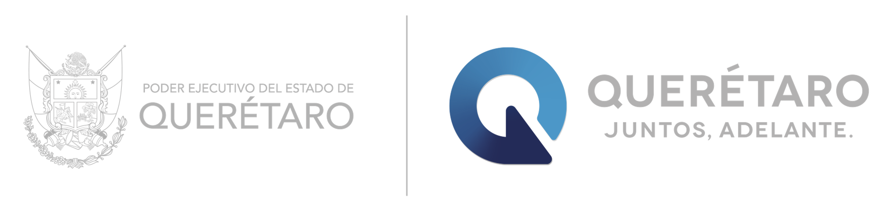

class: center, middle, inverse, title-slide # Análisis de Brechas Percibidas ## Digital ### <p></p> “Gerencia del Poder” ### 29 de octubre de 2021 --- class: inverse, middle, center # ETAPA 1: INICIO --- # ¿Esta es la pregunta uno? --- <div id="htmlwidget-2adc2f767c11db219ba2" style="width:100%;height:288px;" class="highchart html-widget"></div> <script type="application/json" data-for="htmlwidget-2adc2f767c11db219ba2">{"x":{"hc_opts":{"chart":{"reflow":true,"style":{"fontFamily":"Poppins"}},"title":{"text":null},"yAxis":{"title":{"text":[]},"type":"linear"},"credits":{"enabled":false},"exporting":{"enabled":false},"boost":{"enabled":false},"plotOptions":{"series":{"label":{"enabled":false},"turboThreshold":0,"showInLegend":false},"treemap":{"layoutAlgorithm":"squarified"},"scatter":{"marker":{"symbol":"circle"}},"wordcloud":{"allowPointSelect":true,"minFontSize":2}},"series":[{"group":"group","data":[{"palabra":"aicm","n":1,"completa":"1) ataque en el aicm","colores":"#4C97C8","Pregunta":"¿Esta es la pregunta uno?","weight":0,"color":"#4C97C8","name":"aicm"},{"palabra":"alza","n":1,"completa":"1) una balacera en tamaulipas con algunos muertos y varios heridos. la inseguridad a la alza","colores":"#4C97C8","Pregunta":"¿Esta es la pregunta uno?","weight":0,"color":"#4C97C8","name":"alza"},{"palabra":"anaya","n":1,"completa":"1) que pueden encarcelar a anaya, avidegaray y a peña nieto ","colores":"#4C97C8","Pregunta":"¿Esta es la pregunta uno?","weight":0,"color":"#4C97C8","name":"anaya"},{"palabra":"aprobación","n":1,"completa":"1) aprobación de la miscelánea fiscal en la cámara de diputados","colores":"#4C97C8","Pregunta":"¿Esta es la pregunta uno?","weight":0,"color":"#4C97C8","name":"aprobación"},{"palabra":"ataque","n":1,"completa":"1) ataque en el aicm","colores":"#4C97C8","Pregunta":"¿Esta es la pregunta uno?","weight":0,"color":"#4C97C8","name":"ataque"},{"palabra":"avidegaray","n":1,"completa":"1) que pueden encarcelar a anaya, avidegaray y a peña nieto ","colores":"#4C97C8","Pregunta":"¿Esta es la pregunta uno?","weight":0,"color":"#4C97C8","name":"avidegaray"},{"palabra":"ayer","n":1,"completa":"1) cómo cambió el día de ayer el semáforo epidemiologico. ","colores":"#4C97C8","Pregunta":"¿Esta es la pregunta uno?","weight":0,"color":"#4C97C8","name":"ayer"},{"palabra":"balacera","n":1,"completa":"1) una balacera en tamaulipas con algunos muertos y varios heridos. la inseguridad a la alza","colores":"#4C97C8","Pregunta":"¿Esta es la pregunta uno?","weight":0,"color":"#4C97C8","name":"balacera"},{"palabra":"bombero","n":1,"completa":"1) bombero en cdmx saca tanque de gas que se estaba incendiado de un local","colores":"#4C97C8","Pregunta":"¿Esta es la pregunta uno?","weight":0,"color":"#4C97C8","name":"bombero"},{"palabra":"cámara","n":1,"completa":"1) aprobación de la miscelánea fiscal en la cámara de diputados","colores":"#4C97C8","Pregunta":"¿Esta es la pregunta uno?","weight":0,"color":"#4C97C8","name":"cámara"},{"palabra":"cambió","n":1,"completa":"1) cómo cambió el día de ayer el semáforo epidemiologico. ","colores":"#4C97C8","Pregunta":"¿Esta es la pregunta uno?","weight":0,"color":"#4C97C8","name":"cambió"},{"palabra":"cdmx","n":1,"completa":"1) bombero en cdmx saca tanque de gas que se estaba incendiado de un local","colores":"#4C97C8","Pregunta":"¿Esta es la pregunta uno?","weight":0,"color":"#4C97C8","name":"cdmx"},{"palabra":"ciudad","n":1,"completa":"1) la ciudad de méxico regresa a semáforo verde","colores":"#4C97C8","Pregunta":"¿Esta es la pregunta uno?","weight":0,"color":"#4C97C8","name":"ciudad"},{"palabra":"cómo","n":1,"completa":"1) cómo cambió el día de ayer el semáforo epidemiologico. ","colores":"#4C97C8","Pregunta":"¿Esta es la pregunta uno?","weight":0,"color":"#4C97C8","name":"cómo"},{"palabra":"corrupción","n":1,"completa":"1) méxico descendió 4 peldaños en una evaluación de corrupción internacional.","colores":"#4C97C8","Pregunta":"¿Esta es la pregunta uno?","weight":0,"color":"#4C97C8","name":"corrupción"},{"palabra":"covid","n":1,"completa":"1) status sobre el covid","colores":"#4C97C8","Pregunta":"¿Esta es la pregunta uno?","weight":0,"color":"#4C97C8","name":"covid"},{"palabra":"demandar","n":1,"completa":"1) la noticia de que van a demandar penalmente a varios funcionarios que estuviernon involucrados en el evento de la lines 12","colores":"#4C97C8","Pregunta":"¿Esta es la pregunta uno?","weight":0,"color":"#4C97C8","name":"demandar"},{"palabra":"descendió","n":1,"completa":"1) méxico descendió 4 peldaños en una evaluación de corrupción internacional.","colores":"#4C97C8","Pregunta":"¿Esta es la pregunta uno?","weight":0,"color":"#4C97C8","name":"descendió"},{"palabra":"día","n":1,"completa":"1) cómo cambió el día de ayer el semáforo epidemiologico. ","colores":"#4C97C8","Pregunta":"¿Esta es la pregunta uno?","weight":0,"color":"#4C97C8","name":"día"},{"palabra":"diputados","n":1,"completa":"1) aprobación de la miscelánea fiscal en la cámara de diputados","colores":"#4C97C8","Pregunta":"¿Esta es la pregunta uno?","weight":0,"color":"#4C97C8","name":"diputados"},{"palabra":"ebrard","n":1,"completa":"1) noticia sobre marcelo ebrard","colores":"#4C97C8","Pregunta":"¿Esta es la pregunta uno?","weight":0,"color":"#4C97C8","name":"ebrard"},{"palabra":"encarcelar","n":1,"completa":"1) que pueden encarcelar a anaya, avidegaray y a peña nieto ","colores":"#4C97C8","Pregunta":"¿Esta es la pregunta uno?","weight":0,"color":"#4C97C8","name":"encarcelar"},{"palabra":"epidemiologico","n":1,"completa":"1) cómo cambió el día de ayer el semáforo epidemiologico. ","colores":"#4C97C8","Pregunta":"¿Esta es la pregunta uno?","weight":0,"color":"#4C97C8","name":"epidemiologico"},{"palabra":"estuviernon","n":1,"completa":"1) la noticia de que van a demandar penalmente a varios funcionarios que estuviernon involucrados en el evento de la lines 12","colores":"#4C97C8","Pregunta":"¿Esta es la pregunta uno?","weight":0,"color":"#4C97C8","name":"estuviernon"},{"palabra":"evaluación","n":1,"completa":"1) méxico descendió 4 peldaños en una evaluación de corrupción internacional.","colores":"#4C97C8","Pregunta":"¿Esta es la pregunta uno?","weight":0,"color":"#4C97C8","name":"evaluación"},{"palabra":"evento","n":1,"completa":"1) la noticia de que van a demandar penalmente a varios funcionarios que estuviernon involucrados en el evento de la lines 12","colores":"#4C97C8","Pregunta":"¿Esta es la pregunta uno?","weight":0,"color":"#4C97C8","name":"evento"},{"palabra":"fiscal","n":1,"completa":"1) aprobación de la miscelánea fiscal en la cámara de diputados","colores":"#4C97C8","Pregunta":"¿Esta es la pregunta uno?","weight":0,"color":"#4C97C8","name":"fiscal"},{"palabra":"funcionarios","n":1,"completa":"1) la noticia de que van a demandar penalmente a varios funcionarios que estuviernon involucrados en el evento de la lines 12","colores":"#4C97C8","Pregunta":"¿Esta es la pregunta uno?","weight":0,"color":"#4C97C8","name":"funcionarios"},{"palabra":"gas","n":1,"completa":"1) bombero en cdmx saca tanque de gas que se estaba incendiado de un local","colores":"#4C97C8","Pregunta":"¿Esta es la pregunta uno?","weight":0,"color":"#4C97C8","name":"gas"},{"palabra":"heridos","n":1,"completa":"1) una balacera en tamaulipas con algunos muertos y varios heridos. la inseguridad a la alza","colores":"#4C97C8","Pregunta":"¿Esta es la pregunta uno?","weight":0,"color":"#4C97C8","name":"heridos"},{"palabra":"incendiado","n":1,"completa":"1) bombero en cdmx saca tanque de gas que se estaba incendiado de un local","colores":"#4C97C8","Pregunta":"¿Esta es la pregunta uno?","weight":0,"color":"#4C97C8","name":"incendiado"},{"palabra":"inseguridad","n":1,"completa":"1) una balacera en tamaulipas con algunos muertos y varios heridos. la inseguridad a la alza","colores":"#4C97C8","Pregunta":"¿Esta es la pregunta uno?","weight":0,"color":"#4C97C8","name":"inseguridad"},{"palabra":"internacional","n":1,"completa":"1) méxico descendió 4 peldaños en una evaluación de corrupción internacional.","colores":"#4C97C8","Pregunta":"¿Esta es la pregunta uno?","weight":0,"color":"#4C97C8","name":"internacional"},{"palabra":"involucrados","n":1,"completa":"1) la noticia de que van a demandar penalmente a varios funcionarios que estuviernon involucrados en el evento de la lines 12","colores":"#4C97C8","Pregunta":"¿Esta es la pregunta uno?","weight":0,"color":"#4C97C8","name":"involucrados"},{"palabra":"lines","n":1,"completa":"1) la noticia de que van a demandar penalmente a varios funcionarios que estuviernon involucrados en el evento de la lines 12","colores":"#4C97C8","Pregunta":"¿Esta es la pregunta uno?","weight":0,"color":"#4C97C8","name":"lines"},{"palabra":"local","n":1,"completa":"1) bombero en cdmx saca tanque de gas que se estaba incendiado de un local","colores":"#4C97C8","Pregunta":"¿Esta es la pregunta uno?","weight":0,"color":"#4C97C8","name":"local"},{"palabra":"marcelo","n":1,"completa":"1) noticia sobre marcelo ebrard","colores":"#4C97C8","Pregunta":"¿Esta es la pregunta uno?","weight":0,"color":"#4C97C8","name":"marcelo"},{"palabra":"méxico","n":2,"completa":"1) la ciudad de méxico regresa a semáforo verde\n2) méxico descendió 4 peldaños en una evaluación de corrupción internacional.","colores":"#232B58","Pregunta":"¿Esta es la pregunta uno?","weight":0.693147180559945,"color":"#232B58","name":"méxico"},{"palabra":"miscelánea","n":1,"completa":"1) aprobación de la miscelánea fiscal en la cámara de diputados","colores":"#4C97C8","Pregunta":"¿Esta es la pregunta uno?","weight":0,"color":"#4C97C8","name":"miscelánea"},{"palabra":"muertos","n":1,"completa":"1) una balacera en tamaulipas con algunos muertos y varios heridos. la inseguridad a la alza","colores":"#4C97C8","Pregunta":"¿Esta es la pregunta uno?","weight":0,"color":"#4C97C8","name":"muertos"},{"palabra":"nieto","n":1,"completa":"1) que pueden encarcelar a anaya, avidegaray y a peña nieto ","colores":"#4C97C8","Pregunta":"¿Esta es la pregunta uno?","weight":0,"color":"#4C97C8","name":"nieto"},{"palabra":"noticia","n":2,"completa":"1) la noticia de que van a demandar penalmente a varios funcionarios que estuviernon involucrados en el evento de la lines 12\n2) noticia sobre marcelo ebrard","colores":"#232B58","Pregunta":"¿Esta es la pregunta uno?","weight":0.693147180559945,"color":"#232B58","name":"noticia"},{"palabra":"pandemia","n":1,"completa":"1) que la pandemia se ha reducido ","colores":"#4C97C8","Pregunta":"¿Esta es la pregunta uno?","weight":0,"color":"#4C97C8","name":"pandemia"},{"palabra":"peldaños","n":1,"completa":"1) méxico descendió 4 peldaños en una evaluación de corrupción internacional.","colores":"#4C97C8","Pregunta":"¿Esta es la pregunta uno?","weight":0,"color":"#4C97C8","name":"peldaños"},{"palabra":"peña","n":1,"completa":"1) que pueden encarcelar a anaya, avidegaray y a peña nieto ","colores":"#4C97C8","Pregunta":"¿Esta es la pregunta uno?","weight":0,"color":"#4C97C8","name":"peña"},{"palabra":"penalmente","n":1,"completa":"1) la noticia de que van a demandar penalmente a varios funcionarios que estuviernon involucrados en el evento de la lines 12","colores":"#4C97C8","Pregunta":"¿Esta es la pregunta uno?","weight":0,"color":"#4C97C8","name":"penalmente"},{"palabra":"pueden","n":1,"completa":"1) que pueden encarcelar a anaya, avidegaray y a peña nieto ","colores":"#4C97C8","Pregunta":"¿Esta es la pregunta uno?","weight":0,"color":"#4C97C8","name":"pueden"},{"palabra":"reducido","n":1,"completa":"1) que la pandemia se ha reducido ","colores":"#4C97C8","Pregunta":"¿Esta es la pregunta uno?","weight":0,"color":"#4C97C8","name":"reducido"},{"palabra":"regresa","n":1,"completa":"1) la ciudad de méxico regresa a semáforo verde","colores":"#4C97C8","Pregunta":"¿Esta es la pregunta uno?","weight":0,"color":"#4C97C8","name":"regresa"},{"palabra":"saca","n":1,"completa":"1) bombero en cdmx saca tanque de gas que se estaba incendiado de un local","colores":"#4C97C8","Pregunta":"¿Esta es la pregunta uno?","weight":0,"color":"#4C97C8","name":"saca"},{"palabra":"semáforo","n":2,"completa":"1) cómo cambió el día de ayer el semáforo epidemiologico. \n2) la ciudad de méxico regresa a semáforo verde","colores":"#232B58","Pregunta":"¿Esta es la pregunta uno?","weight":0.693147180559945,"color":"#232B58","name":"semáforo"},{"palabra":"status","n":1,"completa":"1) status sobre el covid","colores":"#4C97C8","Pregunta":"¿Esta es la pregunta uno?","weight":0,"color":"#4C97C8","name":"status"},{"palabra":"tamaulipas","n":1,"completa":"1) una balacera en tamaulipas con algunos muertos y varios heridos. la inseguridad a la alza","colores":"#4C97C8","Pregunta":"¿Esta es la pregunta uno?","weight":0,"color":"#4C97C8","name":"tamaulipas"},{"palabra":"tanque","n":1,"completa":"1) bombero en cdmx saca tanque de gas que se estaba incendiado de un local","colores":"#4C97C8","Pregunta":"¿Esta es la pregunta uno?","weight":0,"color":"#4C97C8","name":"tanque"},{"palabra":"van","n":1,"completa":"1) la noticia de que van a demandar penalmente a varios funcionarios que estuviernon involucrados en el evento de la lines 12","colores":"#4C97C8","Pregunta":"¿Esta es la pregunta uno?","weight":0,"color":"#4C97C8","name":"van"},{"palabra":"varios","n":2,"completa":"1) una balacera en tamaulipas con algunos muertos y varios heridos. la inseguridad a la alza\n2) la noticia de que van a demandar penalmente a varios funcionarios que estuviernon involucrados en el evento de la lines 12","colores":"#232B58","Pregunta":"¿Esta es la pregunta uno?","weight":0.693147180559945,"color":"#232B58","name":"varios"},{"palabra":"verde","n":1,"completa":"1) la ciudad de méxico regresa a semáforo verde","colores":"#4C97C8","Pregunta":"¿Esta es la pregunta uno?","weight":0,"color":"#4C97C8","name":"verde"}],"type":"wordcloud"}],"xAxis":{"type":"category","title":{"text":"palabra"},"categories":null},"tooltip":{"pointFormat":"\n Respuestas con la palabra <b>{point.palabra}<b/>: <br>\n {point.completa}\n ","headerFormat":"","backgroundColor":"#FFFFFF","style":{"fontSize":"20px","color":"#343a40","overflow-y":"scroll","scrollbar":true}}},"theme":{"chart":{"backgroundColor":"transparent"},"colors":["#7cb5ec","#434348","#90ed7d","#f7a35c","#8085e9","#f15c80","#e4d354","#2b908f","#f45b5b","#91e8e1"]},"conf_opts":{"global":{"Date":null,"VMLRadialGradientURL":"http =//code.highcharts.com/list(version)/gfx/vml-radial-gradient.png","canvasToolsURL":"http =//code.highcharts.com/list(version)/modules/canvas-tools.js","getTimezoneOffset":null,"timezoneOffset":0,"useUTC":true},"lang":{"contextButtonTitle":"Chart context menu","decimalPoint":".","downloadCSV":"Download CSV","downloadJPEG":"Download JPEG image","downloadPDF":"Download PDF document","downloadPNG":"Download PNG image","downloadSVG":"Download SVG vector image","downloadXLS":"Download XLS","drillUpText":"◁ Back to {series.name}","exitFullscreen":"Exit from full screen","exportData":{"annotationHeader":"Annotations","categoryDatetimeHeader":"DateTime","categoryHeader":"Category"},"hideData":"Hide data table","invalidDate":null,"loading":"Loading...","months":["January","February","March","April","May","June","July","August","September","October","November","December"],"noData":"No data to display","numericSymbolMagnitude":1000,"numericSymbols":["k","M","G","T","P","E"],"printChart":"Print chart","resetZoom":"Reset zoom","resetZoomTitle":"Reset zoom level 1:1","shortMonths":["Jan","Feb","Mar","Apr","May","Jun","Jul","Aug","Sep","Oct","Nov","Dec"],"shortWeekdays":["Sat","Sun","Mon","Tue","Wed","Thu","Fri"],"thousandsSep":" ","viewData":"View data table","viewFullscreen":"View in full screen","weekdays":["Sunday","Monday","Tuesday","Wednesday","Thursday","Friday","Saturday"]}},"type":"chart","fonts":"Poppins","debug":false},"evals":[],"jsHooks":[]}</script> --- # ¿Esta es la pregunta uno? --- <div id="htmlwidget-15b533e59f301a426ac9" style="width:100%;height:auto;" class="datatables html-widget"></div> <script type="application/json" data-for="htmlwidget-15b533e59f301a426ac9">{"x":{"filter":"none","data":[["1","2","3","4","5","6","7","8","9","10","11","12"],["Status sobre el Covid","Aprobación de la miscelánea fiscal en la Cámara de Diputados","Cómo cambió el día de ayer el semáforo epidemiologico. ","la ciudad de méxico regresa a semáforo verde","Bombero en CDMX saca tanque de gas que se estaba incendiado de un local","México descendió 4 peldaños en una evaluación de corrupción internacional.","Una balacera en Tamaulipas con algunos muertos y varios heridos. La inseguridad a la alza","Que pueden encarcelar a Anaya, aVidegaray y a Peña Nieto ","La noticia de que van a demandar penalmente a varios funcionarios que estuviernon involucrados en el evento de la lines 12","Noticia sobre Marcelo Ebrard","Que la pandemia se ha reducido ","Ataque en el AICM"]],"container":"<table class=\"display\">\n <thead>\n <tr>\n <th> <\/th>\n <th>Respuesta<\/th>\n <\/tr>\n <\/thead>\n<\/table>","options":{"language":{"url":"//cdn.datatables.net/plug-ins/1.10.11/i18n/Spanish.json"},"lengthMenu":[5,10,25,50,100],"pageLength":3,"scrollY":300,"order":[],"autoWidth":false,"orderClasses":false,"columnDefs":[{"orderable":false,"targets":0}]}},"evals":[],"jsHooks":[]}</script> --- # ¿Esta es la pregunta dos? --- <div id="htmlwidget-a8f2ede79d0fef76411b" style="width:100%;height:288px;" class="highchart html-widget"></div> <script type="application/json" data-for="htmlwidget-a8f2ede79d0fef76411b">{"x":{"hc_opts":{"chart":{"reflow":true,"style":{"fontFamily":"Poppins"}},"title":{"text":null},"yAxis":{"title":{"text":[]},"type":"linear"},"credits":{"enabled":false},"exporting":{"enabled":false},"boost":{"enabled":false},"plotOptions":{"series":{"label":{"enabled":false},"turboThreshold":0,"showInLegend":false},"treemap":{"layoutAlgorithm":"squarified"},"scatter":{"marker":{"symbol":"circle"}},"wordcloud":{"allowPointSelect":true,"minFontSize":2}},"series":[{"group":"group","data":[{"palabra":"acerca","n":1,"completa":"1) lo que dijo acerca de la estatua de la mujer indígena ","colores":"#4C97C8","Pregunta":"¿Esta es la pregunta dos?","weight":0,"color":"#4C97C8","name":"acerca"},{"palabra":"administración","n":1,"completa":"1) la visita de john kerry, enviado especial de la administración de biden. ","colores":"#4C97C8","Pregunta":"¿Esta es la pregunta dos?","weight":0,"color":"#4C97C8","name":"administración"},{"palabra":"años","n":1,"completa":"1) que señaló que la medida de registrar al sat desde los 18 años servirá para evitar fraudes. ","colores":"#4C97C8","Pregunta":"¿Esta es la pregunta dos?","weight":0,"color":"#4C97C8","name":"años"},{"palabra":"ayuda","n":1,"completa":"1) el presidente habló sobre un tema de migrantes. dijo que el programa sembrando vida ayuda a la migración.","colores":"#4C97C8","Pregunta":"¿Esta es la pregunta dos?","weight":0,"color":"#4C97C8","name":"ayuda"},{"palabra":"biden","n":1,"completa":"1) la visita de john kerry, enviado especial de la administración de biden. ","colores":"#4C97C8","Pregunta":"¿Esta es la pregunta dos?","weight":0,"color":"#4C97C8","name":"biden"},{"palabra":"cambio","n":1,"completa":"1) su colaboracion sobre el cambio climatico con estados unidos","colores":"#4C97C8","Pregunta":"¿Esta es la pregunta dos?","weight":0,"color":"#4C97C8","name":"cambio"},{"palabra":"clima","n":1,"completa":"1) que tuvo una conversación con john kerry para temas de clima","colores":"#4C97C8","Pregunta":"¿Esta es la pregunta dos?","weight":0,"color":"#4C97C8","name":"clima"},{"palabra":"climatico","n":1,"completa":"1) su colaboracion sobre el cambio climatico con estados unidos","colores":"#4C97C8","Pregunta":"¿Esta es la pregunta dos?","weight":0,"color":"#4C97C8","name":"climatico"},{"palabra":"colaboracion","n":1,"completa":"1) su colaboracion sobre el cambio climatico con estados unidos","colores":"#4C97C8","Pregunta":"¿Esta es la pregunta dos?","weight":0,"color":"#4C97C8","name":"colaboracion"},{"palabra":"conferencia","n":1,"completa":"1) lo que dijo en la conferencia matutina","colores":"#4C97C8","Pregunta":"¿Esta es la pregunta dos?","weight":0,"color":"#4C97C8","name":"conferencia"},{"palabra":"conversación","n":1,"completa":"1) que tuvo una conversación con john kerry para temas de clima","colores":"#4C97C8","Pregunta":"¿Esta es la pregunta dos?","weight":0,"color":"#4C97C8","name":"conversación"},{"palabra":"dijo","n":3,"completa":"1) lo que dijo acerca de la estatua de la mujer indígena \n2) lo que dijo en la conferencia matutina\n3) el presidente habló sobre un tema de migrantes. dijo que el programa sembrando vida ayuda a la migración.","colores":"#232B58","Pregunta":"¿Esta es la pregunta dos?","weight":1.09861228866811,"color":"#232B58","name":"dijo"},{"palabra":"eléctrica","n":1,"completa":"1) que está muy pendiente de impulsar la reforma eléctrica","colores":"#4C97C8","Pregunta":"¿Esta es la pregunta dos?","weight":0,"color":"#4C97C8","name":"eléctrica"},{"palabra":"encontraba","n":1,"completa":"1) que se encontraba de gira por las pirámides","colores":"#4C97C8","Pregunta":"¿Esta es la pregunta dos?","weight":0,"color":"#4C97C8","name":"encontraba"},{"palabra":"enviado","n":1,"completa":"1) la visita de john kerry, enviado especial de la administración de biden. ","colores":"#4C97C8","Pregunta":"¿Esta es la pregunta dos?","weight":0,"color":"#4C97C8","name":"enviado"},{"palabra":"especial","n":1,"completa":"1) la visita de john kerry, enviado especial de la administración de biden. ","colores":"#4C97C8","Pregunta":"¿Esta es la pregunta dos?","weight":0,"color":"#4C97C8","name":"especial"},{"palabra":"estatua","n":1,"completa":"1) lo que dijo acerca de la estatua de la mujer indígena ","colores":"#4C97C8","Pregunta":"¿Esta es la pregunta dos?","weight":0,"color":"#4C97C8","name":"estatua"},{"palabra":"evitar","n":1,"completa":"1) que señaló que la medida de registrar al sat desde los 18 años servirá para evitar fraudes. ","colores":"#4C97C8","Pregunta":"¿Esta es la pregunta dos?","weight":0,"color":"#4C97C8","name":"evitar"},{"palabra":"felicitación","n":1,"completa":"1) la felicitación a televisa y univisión por su fusión ","colores":"#4C97C8","Pregunta":"¿Esta es la pregunta dos?","weight":0,"color":"#4C97C8","name":"felicitación"},{"palabra":"fraudes","n":1,"completa":"1) que señaló que la medida de registrar al sat desde los 18 años servirá para evitar fraudes. ","colores":"#4C97C8","Pregunta":"¿Esta es la pregunta dos?","weight":0,"color":"#4C97C8","name":"fraudes"},{"palabra":"fusión","n":1,"completa":"1) la felicitación a televisa y univisión por su fusión ","colores":"#4C97C8","Pregunta":"¿Esta es la pregunta dos?","weight":0,"color":"#4C97C8","name":"fusión"},{"palabra":"gira","n":1,"completa":"1) que se encontraba de gira por las pirámides","colores":"#4C97C8","Pregunta":"¿Esta es la pregunta dos?","weight":0,"color":"#4C97C8","name":"gira"},{"palabra":"hablo","n":1,"completa":"1) lo que hablo sobre las tiendas oxxo","colores":"#4C97C8","Pregunta":"¿Esta es la pregunta dos?","weight":0,"color":"#4C97C8","name":"hablo"},{"palabra":"habló","n":1,"completa":"1) el presidente habló sobre un tema de migrantes. dijo que el programa sembrando vida ayuda a la migración.","colores":"#4C97C8","Pregunta":"¿Esta es la pregunta dos?","weight":0,"color":"#4C97C8","name":"habló"},{"palabra":"impulsar","n":1,"completa":"1) que está muy pendiente de impulsar la reforma eléctrica","colores":"#4C97C8","Pregunta":"¿Esta es la pregunta dos?","weight":0,"color":"#4C97C8","name":"impulsar"},{"palabra":"indígena","n":1,"completa":"1) lo que dijo acerca de la estatua de la mujer indígena ","colores":"#4C97C8","Pregunta":"¿Esta es la pregunta dos?","weight":0,"color":"#4C97C8","name":"indígena"},{"palabra":"john","n":3,"completa":"1) la visita de john kerry, enviado especial de la administración de biden. \n2) que tuvo una conversación con john kerry para temas de clima\n3) platica con john kerry","colores":"#232B58","Pregunta":"¿Esta es la pregunta dos?","weight":1.09861228866811,"color":"#232B58","name":"john"},{"palabra":"kerry","n":3,"completa":"1) la visita de john kerry, enviado especial de la administración de biden. \n2) que tuvo una conversación con john kerry para temas de clima\n3) platica con john kerry","colores":"#232B58","Pregunta":"¿Esta es la pregunta dos?","weight":1.09861228866811,"color":"#232B58","name":"kerry"},{"palabra":"matutina","n":1,"completa":"1) lo que dijo en la conferencia matutina","colores":"#4C97C8","Pregunta":"¿Esta es la pregunta dos?","weight":0,"color":"#4C97C8","name":"matutina"},{"palabra":"medida","n":1,"completa":"1) que señaló que la medida de registrar al sat desde los 18 años servirá para evitar fraudes. ","colores":"#4C97C8","Pregunta":"¿Esta es la pregunta dos?","weight":0,"color":"#4C97C8","name":"medida"},{"palabra":"migración","n":1,"completa":"1) el presidente habló sobre un tema de migrantes. dijo que el programa sembrando vida ayuda a la migración.","colores":"#4C97C8","Pregunta":"¿Esta es la pregunta dos?","weight":0,"color":"#4C97C8","name":"migración"},{"palabra":"migrantes","n":1,"completa":"1) el presidente habló sobre un tema de migrantes. dijo que el programa sembrando vida ayuda a la migración.","colores":"#4C97C8","Pregunta":"¿Esta es la pregunta dos?","weight":0,"color":"#4C97C8","name":"migrantes"},{"palabra":"mujer","n":1,"completa":"1) lo que dijo acerca de la estatua de la mujer indígena ","colores":"#4C97C8","Pregunta":"¿Esta es la pregunta dos?","weight":0,"color":"#4C97C8","name":"mujer"},{"palabra":"oxxo","n":1,"completa":"1) lo que hablo sobre las tiendas oxxo","colores":"#4C97C8","Pregunta":"¿Esta es la pregunta dos?","weight":0,"color":"#4C97C8","name":"oxxo"},{"palabra":"pendiente","n":1,"completa":"1) que está muy pendiente de impulsar la reforma eléctrica","colores":"#4C97C8","Pregunta":"¿Esta es la pregunta dos?","weight":0,"color":"#4C97C8","name":"pendiente"},{"palabra":"pirámides","n":1,"completa":"1) que se encontraba de gira por las pirámides","colores":"#4C97C8","Pregunta":"¿Esta es la pregunta dos?","weight":0,"color":"#4C97C8","name":"pirámides"},{"palabra":"platica","n":1,"completa":"1) platica con john kerry","colores":"#4C97C8","Pregunta":"¿Esta es la pregunta dos?","weight":0,"color":"#4C97C8","name":"platica"},{"palabra":"presidente","n":1,"completa":"1) el presidente habló sobre un tema de migrantes. dijo que el programa sembrando vida ayuda a la migración.","colores":"#4C97C8","Pregunta":"¿Esta es la pregunta dos?","weight":0,"color":"#4C97C8","name":"presidente"},{"palabra":"programa","n":1,"completa":"1) el presidente habló sobre un tema de migrantes. dijo que el programa sembrando vida ayuda a la migración.","colores":"#4C97C8","Pregunta":"¿Esta es la pregunta dos?","weight":0,"color":"#4C97C8","name":"programa"},{"palabra":"reforma","n":1,"completa":"1) que está muy pendiente de impulsar la reforma eléctrica","colores":"#4C97C8","Pregunta":"¿Esta es la pregunta dos?","weight":0,"color":"#4C97C8","name":"reforma"},{"palabra":"registrar","n":1,"completa":"1) que señaló que la medida de registrar al sat desde los 18 años servirá para evitar fraudes. ","colores":"#4C97C8","Pregunta":"¿Esta es la pregunta dos?","weight":0,"color":"#4C97C8","name":"registrar"},{"palabra":"sat","n":1,"completa":"1) que señaló que la medida de registrar al sat desde los 18 años servirá para evitar fraudes. ","colores":"#4C97C8","Pregunta":"¿Esta es la pregunta dos?","weight":0,"color":"#4C97C8","name":"sat"},{"palabra":"sembrando","n":1,"completa":"1) el presidente habló sobre un tema de migrantes. dijo que el programa sembrando vida ayuda a la migración.","colores":"#4C97C8","Pregunta":"¿Esta es la pregunta dos?","weight":0,"color":"#4C97C8","name":"sembrando"},{"palabra":"señaló","n":1,"completa":"1) que señaló que la medida de registrar al sat desde los 18 años servirá para evitar fraudes. ","colores":"#4C97C8","Pregunta":"¿Esta es la pregunta dos?","weight":0,"color":"#4C97C8","name":"señaló"},{"palabra":"servirá","n":1,"completa":"1) que señaló que la medida de registrar al sat desde los 18 años servirá para evitar fraudes. ","colores":"#4C97C8","Pregunta":"¿Esta es la pregunta dos?","weight":0,"color":"#4C97C8","name":"servirá"},{"palabra":"televisa","n":1,"completa":"1) la felicitación a televisa y univisión por su fusión ","colores":"#4C97C8","Pregunta":"¿Esta es la pregunta dos?","weight":0,"color":"#4C97C8","name":"televisa"},{"palabra":"tema","n":1,"completa":"1) el presidente habló sobre un tema de migrantes. dijo que el programa sembrando vida ayuda a la migración.","colores":"#4C97C8","Pregunta":"¿Esta es la pregunta dos?","weight":0,"color":"#4C97C8","name":"tema"},{"palabra":"temas","n":1,"completa":"1) que tuvo una conversación con john kerry para temas de clima","colores":"#4C97C8","Pregunta":"¿Esta es la pregunta dos?","weight":0,"color":"#4C97C8","name":"temas"},{"palabra":"tiendas","n":1,"completa":"1) lo que hablo sobre las tiendas oxxo","colores":"#4C97C8","Pregunta":"¿Esta es la pregunta dos?","weight":0,"color":"#4C97C8","name":"tiendas"},{"palabra":"unidos","n":1,"completa":"1) su colaboracion sobre el cambio climatico con estados unidos","colores":"#4C97C8","Pregunta":"¿Esta es la pregunta dos?","weight":0,"color":"#4C97C8","name":"unidos"},{"palabra":"univisión","n":1,"completa":"1) la felicitación a televisa y univisión por su fusión ","colores":"#4C97C8","Pregunta":"¿Esta es la pregunta dos?","weight":0,"color":"#4C97C8","name":"univisión"},{"palabra":"vida","n":1,"completa":"1) el presidente habló sobre un tema de migrantes. dijo que el programa sembrando vida ayuda a la migración.","colores":"#4C97C8","Pregunta":"¿Esta es la pregunta dos?","weight":0,"color":"#4C97C8","name":"vida"},{"palabra":"visita","n":1,"completa":"1) la visita de john kerry, enviado especial de la administración de biden. ","colores":"#4C97C8","Pregunta":"¿Esta es la pregunta dos?","weight":0,"color":"#4C97C8","name":"visita"}],"type":"wordcloud"}],"xAxis":{"type":"category","title":{"text":"palabra"},"categories":null},"tooltip":{"pointFormat":"\n Respuestas con la palabra <b>{point.palabra}<b/>: <br>\n {point.completa}\n ","headerFormat":"","backgroundColor":"#FFFFFF","style":{"fontSize":"20px","color":"#343a40","overflow-y":"scroll","scrollbar":true}}},"theme":{"chart":{"backgroundColor":"transparent"},"colors":["#7cb5ec","#434348","#90ed7d","#f7a35c","#8085e9","#f15c80","#e4d354","#2b908f","#f45b5b","#91e8e1"]},"conf_opts":{"global":{"Date":null,"VMLRadialGradientURL":"http =//code.highcharts.com/list(version)/gfx/vml-radial-gradient.png","canvasToolsURL":"http =//code.highcharts.com/list(version)/modules/canvas-tools.js","getTimezoneOffset":null,"timezoneOffset":0,"useUTC":true},"lang":{"contextButtonTitle":"Chart context menu","decimalPoint":".","downloadCSV":"Download CSV","downloadJPEG":"Download JPEG image","downloadPDF":"Download PDF document","downloadPNG":"Download PNG image","downloadSVG":"Download SVG vector image","downloadXLS":"Download XLS","drillUpText":"◁ Back to {series.name}","exitFullscreen":"Exit from full screen","exportData":{"annotationHeader":"Annotations","categoryDatetimeHeader":"DateTime","categoryHeader":"Category"},"hideData":"Hide data table","invalidDate":null,"loading":"Loading...","months":["January","February","March","April","May","June","July","August","September","October","November","December"],"noData":"No data to display","numericSymbolMagnitude":1000,"numericSymbols":["k","M","G","T","P","E"],"printChart":"Print chart","resetZoom":"Reset zoom","resetZoomTitle":"Reset zoom level 1:1","shortMonths":["Jan","Feb","Mar","Apr","May","Jun","Jul","Aug","Sep","Oct","Nov","Dec"],"shortWeekdays":["Sat","Sun","Mon","Tue","Wed","Thu","Fri"],"thousandsSep":" ","viewData":"View data table","viewFullscreen":"View in full screen","weekdays":["Sunday","Monday","Tuesday","Wednesday","Thursday","Friday","Saturday"]}},"type":"chart","fonts":"Poppins","debug":false},"evals":[],"jsHooks":[]}</script> --- # ¿Esta es la pregunta dos? --- <div id="htmlwidget-cd390add57afd3884b18" style="width:100%;height:auto;" class="datatables html-widget"></div> <script type="application/json" data-for="htmlwidget-cd390add57afd3884b18">{"x":{"filter":"none","data":[["1","2","3","4","5","6","7","8","9","10","11","12"],["La visita de John Kerry, enviado especial de la administración de Biden. ","La felicitación a Televisa y Univisión por su fusión ","Que tuvo una conversación con John Kerry para temas de clima","Que está muy pendiente de impulsar la Reforma Eléctrica","Lo que dijo acerca de la estatua de la mujer indígena ","Lo que dijo en la conferencia matutina","Lo que hablo sobre las tiendas Oxxo","Que señaló que la medida de registrar al SAT desde los 18 años servirá para evitar fraudes. ","Platica con John Kerry","Su colaboracion sobre el cambio climatico con Estados Unidos","El Presidente habló sobre un tema de migrantes. Dijo que el programa sembrando vida ayuda a la migración.","Que se encontraba de gira por las pirámides"]],"container":"<table class=\"display\">\n <thead>\n <tr>\n <th> <\/th>\n <th>Respuesta<\/th>\n <\/tr>\n <\/thead>\n<\/table>","options":{"language":{"url":"//cdn.datatables.net/plug-ins/1.10.11/i18n/Spanish.json"},"lengthMenu":[5,10,25,50,100],"pageLength":3,"scrollY":300,"order":[],"autoWidth":false,"orderClasses":false,"columnDefs":[{"orderable":false,"targets":0}]}},"evals":[],"jsHooks":[]}</script> --- # ¿Esta es la pregunta tres? --- <div id="htmlwidget-31cf4082becfe0864792" style="width:100%;height:288px;" class="highchart html-widget"></div> <script type="application/json" data-for="htmlwidget-31cf4082becfe0864792">{"x":{"hc_opts":{"chart":{"reflow":true,"style":{"fontFamily":"Poppins"}},"title":{"text":null},"yAxis":{"title":{"text":[]},"type":"linear"},"credits":{"enabled":false},"exporting":{"enabled":false},"boost":{"enabled":false},"plotOptions":{"series":{"label":{"enabled":false},"turboThreshold":0,"showInLegend":false},"treemap":{"layoutAlgorithm":"squarified"},"scatter":{"marker":{"symbol":"circle"}},"wordcloud":{"allowPointSelect":true,"minFontSize":2}},"series":[{"group":"group","data":[{"palabra":"agenda","n":1,"completa":"1) que no existe la suficiente diversidad de medios, es necesario que se creen medios diversos que no atiendan solo a la agenda presidencial. ","colores":"#4C97C8","Pregunta":"¿Esta es la pregunta tres?","weight":0,"color":"#4C97C8","name":"agenda"},{"palabra":"ahora","n":1,"completa":"1) hay mucha diversidad, más ahora con las plataformas digitales, son embargo es necesario que se fortalezca para una mayor pluralidad y libertad de expresión","colores":"#4C97C8","Pregunta":"¿Esta es la pregunta tres?","weight":0,"color":"#4C97C8","name":"ahora"},{"palabra":"apertura","n":1,"completa":"1) creo que es una muestra de la pluralidad y la apertura en este cambio de régimen","colores":"#4C97C8","Pregunta":"¿Esta es la pregunta tres?","weight":0,"color":"#4C97C8","name":"apertura"},{"palabra":"ataques","n":1,"completa":"1) es suficiente, pero cada vez se hace más evidente los mecanismos de censura, desde el gobierno hasta el crimen organizado. los periodistas padecen ataques y censura. ","colores":"#4C97C8","Pregunta":"¿Esta es la pregunta tres?","weight":0,"color":"#4C97C8","name":"ataques"},{"palabra":"atiendan","n":1,"completa":"1) que no existe la suficiente diversidad de medios, es necesario que se creen medios diversos que no atiendan solo a la agenda presidencial. ","colores":"#4C97C8","Pregunta":"¿Esta es la pregunta tres?","weight":0,"color":"#4C97C8","name":"atiendan"},{"palabra":"cada","n":1,"completa":"1) es suficiente, pero cada vez se hace más evidente los mecanismos de censura, desde el gobierno hasta el crimen organizado. los periodistas padecen ataques y censura. ","colores":"#4C97C8","Pregunta":"¿Esta es la pregunta tres?","weight":0,"color":"#4C97C8","name":"cada"},{"palabra":"cambio","n":1,"completa":"1) creo que es una muestra de la pluralidad y la apertura en este cambio de régimen","colores":"#4C97C8","Pregunta":"¿Esta es la pregunta tres?","weight":0,"color":"#4C97C8","name":"cambio"},{"palabra":"cantidad","n":1,"completa":"1) yo creo que entre mayor cantidad de medios fuertes y serios se contribuye una mejor opinión y pública.","colores":"#4C97C8","Pregunta":"¿Esta es la pregunta tres?","weight":0,"color":"#4C97C8","name":"cantidad"},{"palabra":"censura","n":2,"completa":"1) es suficiente, pero cada vez se hace más evidente los mecanismos de censura, desde el gobierno hasta el crimen organizado. los periodistas padecen ataques y censura. \n2) es suficiente, pero cada vez se hace más evidente los mecanismos de censura, desde el gobierno hasta el crimen organizado. los periodistas padecen ataques y censura. ","colores":"#304E83","Pregunta":"¿Esta es la pregunta tres?","weight":0.693147180559945,"color":"#304E83","name":"censura"},{"palabra":"comparación","n":1,"completa":"1) consideró que si hay una diversidad escrita, radio, televisión y redes social en comparación con otros países","colores":"#4C97C8","Pregunta":"¿Esta es la pregunta tres?","weight":0,"color":"#4C97C8","name":"comparación"},{"palabra":"comunicación","n":1,"completa":"1) qué existe un gran sesgo en la comunicación","colores":"#4C97C8","Pregunta":"¿Esta es la pregunta tres?","weight":0,"color":"#4C97C8","name":"comunicación"},{"palabra":"consideró","n":1,"completa":"1) consideró que si hay una diversidad escrita, radio, televisión y redes social en comparación con otros países","colores":"#4C97C8","Pregunta":"¿Esta es la pregunta tres?","weight":0,"color":"#4C97C8","name":"consideró"},{"palabra":"contribuye","n":1,"completa":"1) yo creo que entre mayor cantidad de medios fuertes y serios se contribuye una mejor opinión y pública.","colores":"#4C97C8","Pregunta":"¿Esta es la pregunta tres?","weight":0,"color":"#4C97C8","name":"contribuye"},{"palabra":"creen","n":1,"completa":"1) que no existe la suficiente diversidad de medios, es necesario que se creen medios diversos que no atiendan solo a la agenda presidencial. ","colores":"#4C97C8","Pregunta":"¿Esta es la pregunta tres?","weight":0,"color":"#4C97C8","name":"creen"},{"palabra":"creo","n":3,"completa":"1) creo que es una muestra de la pluralidad y la apertura en este cambio de régimen\n2) yo creo que los medios tradicionales tienen un sesgo en las opiniones pero en redes sociales hay mayor diversidad de opiniones\n3) yo creo que entre mayor cantidad de medios fuertes y serios se contribuye una mejor opinión y pública.","colores":"#232B58","Pregunta":"¿Esta es la pregunta tres?","weight":1.09861228866811,"color":"#232B58","name":"creo"},{"palabra":"crimen","n":1,"completa":"1) es suficiente, pero cada vez se hace más evidente los mecanismos de censura, desde el gobierno hasta el crimen organizado. los periodistas padecen ataques y censura. ","colores":"#4C97C8","Pregunta":"¿Esta es la pregunta tres?","weight":0,"color":"#4C97C8","name":"crimen"},{"palabra":"demasiada","n":1,"completa":"1) demasiada información, estamos saturados de información","colores":"#4C97C8","Pregunta":"¿Esta es la pregunta tres?","weight":0,"color":"#4C97C8","name":"demasiada"},{"palabra":"desventaja","n":1,"completa":"1) es importante que exista, la única desventaja es que no hay suficiente difusión lo cual provoca que los medios con los mismos ejes siempren predominen. ","colores":"#4C97C8","Pregunta":"¿Esta es la pregunta tres?","weight":0,"color":"#4C97C8","name":"desventaja"},{"palabra":"difusión","n":1,"completa":"1) es importante que exista, la única desventaja es que no hay suficiente difusión lo cual provoca que los medios con los mismos ejes siempren predominen. ","colores":"#4C97C8","Pregunta":"¿Esta es la pregunta tres?","weight":0,"color":"#4C97C8","name":"difusión"},{"palabra":"digitales","n":1,"completa":"1) hay mucha diversidad, más ahora con las plataformas digitales, son embargo es necesario que se fortalezca para una mayor pluralidad y libertad de expresión","colores":"#4C97C8","Pregunta":"¿Esta es la pregunta tres?","weight":0,"color":"#4C97C8","name":"digitales"},{"palabra":"diversidad","n":5,"completa":"1) pues diversidad a medias la verdad\n2) yo creo que los medios tradicionales tienen un sesgo en las opiniones pero en redes sociales hay mayor diversidad de opiniones\n3) hay mucha diversidad, más ahora con las plataformas digitales, son embargo es necesario que se fortalezca para una mayor pluralidad y libertad de expresión\n4) consideró que si hay una diversidad escrita, radio, televisión y redes social en comparación con otros países\n5) que no existe la suficiente diversidad de medios, es necesario que se creen medios diversos que no atiendan solo a la agenda presidencial. ","colores":"#232B58","Pregunta":"¿Esta es la pregunta tres?","weight":1.6094379124341,"color":"#232B58","name":"diversidad"},{"palabra":"diversos","n":1,"completa":"1) que no existe la suficiente diversidad de medios, es necesario que se creen medios diversos que no atiendan solo a la agenda presidencial. ","colores":"#4C97C8","Pregunta":"¿Esta es la pregunta tres?","weight":0,"color":"#4C97C8","name":"diversos"},{"palabra":"ejes","n":1,"completa":"1) es importante que exista, la única desventaja es que no hay suficiente difusión lo cual provoca que los medios con los mismos ejes siempren predominen. ","colores":"#4C97C8","Pregunta":"¿Esta es la pregunta tres?","weight":0,"color":"#4C97C8","name":"ejes"},{"palabra":"embargo","n":1,"completa":"1) hay mucha diversidad, más ahora con las plataformas digitales, son embargo es necesario que se fortalezca para una mayor pluralidad y libertad de expresión","colores":"#4C97C8","Pregunta":"¿Esta es la pregunta tres?","weight":0,"color":"#4C97C8","name":"embargo"},{"palabra":"entiendo","n":1,"completa":"1) no entiendo la pregunta","colores":"#4C97C8","Pregunta":"¿Esta es la pregunta tres?","weight":0,"color":"#4C97C8","name":"entiendo"},{"palabra":"escrita","n":1,"completa":"1) consideró que si hay una diversidad escrita, radio, televisión y redes social en comparación con otros países","colores":"#4C97C8","Pregunta":"¿Esta es la pregunta tres?","weight":0,"color":"#4C97C8","name":"escrita"},{"palabra":"evidente","n":1,"completa":"1) es suficiente, pero cada vez se hace más evidente los mecanismos de censura, desde el gobierno hasta el crimen organizado. los periodistas padecen ataques y censura. ","colores":"#4C97C8","Pregunta":"¿Esta es la pregunta tres?","weight":0,"color":"#4C97C8","name":"evidente"},{"palabra":"exista","n":1,"completa":"1) es importante que exista, la única desventaja es que no hay suficiente difusión lo cual provoca que los medios con los mismos ejes siempren predominen. ","colores":"#4C97C8","Pregunta":"¿Esta es la pregunta tres?","weight":0,"color":"#4C97C8","name":"exista"},{"palabra":"existe","n":2,"completa":"1) qué existe un gran sesgo en la comunicación\n2) que no existe la suficiente diversidad de medios, es necesario que se creen medios diversos que no atiendan solo a la agenda presidencial. ","colores":"#304E83","Pregunta":"¿Esta es la pregunta tres?","weight":0.693147180559945,"color":"#304E83","name":"existe"},{"palabra":"expresión","n":1,"completa":"1) hay mucha diversidad, más ahora con las plataformas digitales, son embargo es necesario que se fortalezca para una mayor pluralidad y libertad de expresión","colores":"#4C97C8","Pregunta":"¿Esta es la pregunta tres?","weight":0,"color":"#4C97C8","name":"expresión"},{"palabra":"fortalezca","n":1,"completa":"1) hay mucha diversidad, más ahora con las plataformas digitales, son embargo es necesario que se fortalezca para una mayor pluralidad y libertad de expresión","colores":"#4C97C8","Pregunta":"¿Esta es la pregunta tres?","weight":0,"color":"#4C97C8","name":"fortalezca"},{"palabra":"fuertes","n":1,"completa":"1) yo creo que entre mayor cantidad de medios fuertes y serios se contribuye una mejor opinión y pública.","colores":"#4C97C8","Pregunta":"¿Esta es la pregunta tres?","weight":0,"color":"#4C97C8","name":"fuertes"},{"palabra":"gobierno","n":1,"completa":"1) es suficiente, pero cada vez se hace más evidente los mecanismos de censura, desde el gobierno hasta el crimen organizado. los periodistas padecen ataques y censura. ","colores":"#4C97C8","Pregunta":"¿Esta es la pregunta tres?","weight":0,"color":"#4C97C8","name":"gobierno"},{"palabra":"gran","n":1,"completa":"1) qué existe un gran sesgo en la comunicación","colores":"#4C97C8","Pregunta":"¿Esta es la pregunta tres?","weight":0,"color":"#4C97C8","name":"gran"},{"palabra":"hace","n":1,"completa":"1) es suficiente, pero cada vez se hace más evidente los mecanismos de censura, desde el gobierno hasta el crimen organizado. los periodistas padecen ataques y censura. ","colores":"#4C97C8","Pregunta":"¿Esta es la pregunta tres?","weight":0,"color":"#4C97C8","name":"hace"},{"palabra":"importante","n":1,"completa":"1) es importante que exista, la única desventaja es que no hay suficiente difusión lo cual provoca que los medios con los mismos ejes siempren predominen. ","colores":"#4C97C8","Pregunta":"¿Esta es la pregunta tres?","weight":0,"color":"#4C97C8","name":"importante"},{"palabra":"información","n":2,"completa":"1) demasiada información, estamos saturados de información\n2) demasiada información, estamos saturados de información","colores":"#304E83","Pregunta":"¿Esta es la pregunta tres?","weight":0.693147180559945,"color":"#304E83","name":"información"},{"palabra":"libertad","n":1,"completa":"1) hay mucha diversidad, más ahora con las plataformas digitales, son embargo es necesario que se fortalezca para una mayor pluralidad y libertad de expresión","colores":"#4C97C8","Pregunta":"¿Esta es la pregunta tres?","weight":0,"color":"#4C97C8","name":"libertad"},{"palabra":"mayor","n":3,"completa":"1) yo creo que los medios tradicionales tienen un sesgo en las opiniones pero en redes sociales hay mayor diversidad de opiniones\n2) hay mucha diversidad, más ahora con las plataformas digitales, son embargo es necesario que se fortalezca para una mayor pluralidad y libertad de expresión\n3) yo creo que entre mayor cantidad de medios fuertes y serios se contribuye una mejor opinión y pública.","colores":"#232B58","Pregunta":"¿Esta es la pregunta tres?","weight":1.09861228866811,"color":"#232B58","name":"mayor"},{"palabra":"mecanismos","n":1,"completa":"1) es suficiente, pero cada vez se hace más evidente los mecanismos de censura, desde el gobierno hasta el crimen organizado. los periodistas padecen ataques y censura. ","colores":"#4C97C8","Pregunta":"¿Esta es la pregunta tres?","weight":0,"color":"#4C97C8","name":"mecanismos"},{"palabra":"medias","n":1,"completa":"1) pues diversidad a medias la verdad","colores":"#4C97C8","Pregunta":"¿Esta es la pregunta tres?","weight":0,"color":"#4C97C8","name":"medias"},{"palabra":"medios","n":5,"completa":"1) yo creo que los medios tradicionales tienen un sesgo en las opiniones pero en redes sociales hay mayor diversidad de opiniones\n2) yo creo que entre mayor cantidad de medios fuertes y serios se contribuye una mejor opinión y pública.\n3) que no existe la suficiente diversidad de medios, es necesario que se creen medios diversos que no atiendan solo a la agenda presidencial. \n4) que no existe la suficiente diversidad de medios, es necesario que se creen medios diversos que no atiendan solo a la agenda presidencial. \n5) es importante que exista, la única desventaja es que no hay suficiente difusión lo cual provoca que los medios con los mismos ejes siempren predominen. ","colores":"#232B58","Pregunta":"¿Esta es la pregunta tres?","weight":1.6094379124341,"color":"#232B58","name":"medios"},{"palabra":"mejor","n":1,"completa":"1) yo creo que entre mayor cantidad de medios fuertes y serios se contribuye una mejor opinión y pública.","colores":"#4C97C8","Pregunta":"¿Esta es la pregunta tres?","weight":0,"color":"#4C97C8","name":"mejor"},{"palabra":"mismos","n":1,"completa":"1) es importante que exista, la única desventaja es que no hay suficiente difusión lo cual provoca que los medios con los mismos ejes siempren predominen. ","colores":"#4C97C8","Pregunta":"¿Esta es la pregunta tres?","weight":0,"color":"#4C97C8","name":"mismos"},{"palabra":"mucha","n":1,"completa":"1) hay mucha diversidad, más ahora con las plataformas digitales, son embargo es necesario que se fortalezca para una mayor pluralidad y libertad de expresión","colores":"#4C97C8","Pregunta":"¿Esta es la pregunta tres?","weight":0,"color":"#4C97C8","name":"mucha"},{"palabra":"muestra","n":1,"completa":"1) creo que es una muestra de la pluralidad y la apertura en este cambio de régimen","colores":"#4C97C8","Pregunta":"¿Esta es la pregunta tres?","weight":0,"color":"#4C97C8","name":"muestra"},{"palabra":"necesario","n":2,"completa":"1) hay mucha diversidad, más ahora con las plataformas digitales, son embargo es necesario que se fortalezca para una mayor pluralidad y libertad de expresión\n2) que no existe la suficiente diversidad de medios, es necesario que se creen medios diversos que no atiendan solo a la agenda presidencial. ","colores":"#304E83","Pregunta":"¿Esta es la pregunta tres?","weight":0.693147180559945,"color":"#304E83","name":"necesario"},{"palabra":"opinión","n":1,"completa":"1) yo creo que entre mayor cantidad de medios fuertes y serios se contribuye una mejor opinión y pública.","colores":"#4C97C8","Pregunta":"¿Esta es la pregunta tres?","weight":0,"color":"#4C97C8","name":"opinión"},{"palabra":"opiniones","n":2,"completa":"1) yo creo que los medios tradicionales tienen un sesgo en las opiniones pero en redes sociales hay mayor diversidad de opiniones\n2) yo creo que los medios tradicionales tienen un sesgo en las opiniones pero en redes sociales hay mayor diversidad de opiniones","colores":"#304E83","Pregunta":"¿Esta es la pregunta tres?","weight":0.693147180559945,"color":"#304E83","name":"opiniones"},{"palabra":"organizado","n":1,"completa":"1) es suficiente, pero cada vez se hace más evidente los mecanismos de censura, desde el gobierno hasta el crimen organizado. los periodistas padecen ataques y censura. ","colores":"#4C97C8","Pregunta":"¿Esta es la pregunta tres?","weight":0,"color":"#4C97C8","name":"organizado"},{"palabra":"padecen","n":1,"completa":"1) es suficiente, pero cada vez se hace más evidente los mecanismos de censura, desde el gobierno hasta el crimen organizado. los periodistas padecen ataques y censura. ","colores":"#4C97C8","Pregunta":"¿Esta es la pregunta tres?","weight":0,"color":"#4C97C8","name":"padecen"},{"palabra":"países","n":1,"completa":"1) consideró que si hay una diversidad escrita, radio, televisión y redes social en comparación con otros países","colores":"#4C97C8","Pregunta":"¿Esta es la pregunta tres?","weight":0,"color":"#4C97C8","name":"países"},{"palabra":"periodistas","n":1,"completa":"1) es suficiente, pero cada vez se hace más evidente los mecanismos de censura, desde el gobierno hasta el crimen organizado. los periodistas padecen ataques y censura. ","colores":"#4C97C8","Pregunta":"¿Esta es la pregunta tres?","weight":0,"color":"#4C97C8","name":"periodistas"},{"palabra":"plataformas","n":1,"completa":"1) hay mucha diversidad, más ahora con las plataformas digitales, son embargo es necesario que se fortalezca para una mayor pluralidad y libertad de expresión","colores":"#4C97C8","Pregunta":"¿Esta es la pregunta tres?","weight":0,"color":"#4C97C8","name":"plataformas"},{"palabra":"pluralidad","n":2,"completa":"1) creo que es una muestra de la pluralidad y la apertura en este cambio de régimen\n2) hay mucha diversidad, más ahora con las plataformas digitales, son embargo es necesario que se fortalezca para una mayor pluralidad y libertad de expresión","colores":"#304E83","Pregunta":"¿Esta es la pregunta tres?","weight":0.693147180559945,"color":"#304E83","name":"pluralidad"},{"palabra":"predominen","n":1,"completa":"1) es importante que exista, la única desventaja es que no hay suficiente difusión lo cual provoca que los medios con los mismos ejes siempren predominen. ","colores":"#4C97C8","Pregunta":"¿Esta es la pregunta tres?","weight":0,"color":"#4C97C8","name":"predominen"},{"palabra":"pregunta","n":1,"completa":"1) no entiendo la pregunta","colores":"#4C97C8","Pregunta":"¿Esta es la pregunta tres?","weight":0,"color":"#4C97C8","name":"pregunta"},{"palabra":"presidencial","n":1,"completa":"1) que no existe la suficiente diversidad de medios, es necesario que se creen medios diversos que no atiendan solo a la agenda presidencial. ","colores":"#4C97C8","Pregunta":"¿Esta es la pregunta tres?","weight":0,"color":"#4C97C8","name":"presidencial"},{"palabra":"provoca","n":1,"completa":"1) es importante que exista, la única desventaja es que no hay suficiente difusión lo cual provoca que los medios con los mismos ejes siempren predominen. ","colores":"#4C97C8","Pregunta":"¿Esta es la pregunta tres?","weight":0,"color":"#4C97C8","name":"provoca"},{"palabra":"pública","n":1,"completa":"1) yo creo que entre mayor cantidad de medios fuertes y serios se contribuye una mejor opinión y pública.","colores":"#4C97C8","Pregunta":"¿Esta es la pregunta tres?","weight":0,"color":"#4C97C8","name":"pública"},{"palabra":"pues","n":1,"completa":"1) pues diversidad a medias la verdad","colores":"#4C97C8","Pregunta":"¿Esta es la pregunta tres?","weight":0,"color":"#4C97C8","name":"pues"},{"palabra":"radio","n":1,"completa":"1) consideró que si hay una diversidad escrita, radio, televisión y redes social en comparación con otros países","colores":"#4C97C8","Pregunta":"¿Esta es la pregunta tres?","weight":0,"color":"#4C97C8","name":"radio"},{"palabra":"redes","n":2,"completa":"1) yo creo que los medios tradicionales tienen un sesgo en las opiniones pero en redes sociales hay mayor diversidad de opiniones\n2) consideró que si hay una diversidad escrita, radio, televisión y redes social en comparación con otros países","colores":"#304E83","Pregunta":"¿Esta es la pregunta tres?","weight":0.693147180559945,"color":"#304E83","name":"redes"},{"palabra":"régimen","n":1,"completa":"1) creo que es una muestra de la pluralidad y la apertura en este cambio de régimen","colores":"#4C97C8","Pregunta":"¿Esta es la pregunta tres?","weight":0,"color":"#4C97C8","name":"régimen"},{"palabra":"saturados","n":1,"completa":"1) demasiada información, estamos saturados de información","colores":"#4C97C8","Pregunta":"¿Esta es la pregunta tres?","weight":0,"color":"#4C97C8","name":"saturados"},{"palabra":"serios","n":1,"completa":"1) yo creo que entre mayor cantidad de medios fuertes y serios se contribuye una mejor opinión y pública.","colores":"#4C97C8","Pregunta":"¿Esta es la pregunta tres?","weight":0,"color":"#4C97C8","name":"serios"},{"palabra":"sesgo","n":2,"completa":"1) yo creo que los medios tradicionales tienen un sesgo en las opiniones pero en redes sociales hay mayor diversidad de opiniones\n2) qué existe un gran sesgo en la comunicación","colores":"#304E83","Pregunta":"¿Esta es la pregunta tres?","weight":0.693147180559945,"color":"#304E83","name":"sesgo"},{"palabra":"si","n":1,"completa":"1) consideró que si hay una diversidad escrita, radio, televisión y redes social en comparación con otros países","colores":"#4C97C8","Pregunta":"¿Esta es la pregunta tres?","weight":0,"color":"#4C97C8","name":"si"},{"palabra":"siempren","n":1,"completa":"1) es importante que exista, la única desventaja es que no hay suficiente difusión lo cual provoca que los medios con los mismos ejes siempren predominen. ","colores":"#4C97C8","Pregunta":"¿Esta es la pregunta tres?","weight":0,"color":"#4C97C8","name":"siempren"},{"palabra":"social","n":1,"completa":"1) consideró que si hay una diversidad escrita, radio, televisión y redes social en comparación con otros países","colores":"#4C97C8","Pregunta":"¿Esta es la pregunta tres?","weight":0,"color":"#4C97C8","name":"social"},{"palabra":"sociales","n":1,"completa":"1) yo creo que los medios tradicionales tienen un sesgo en las opiniones pero en redes sociales hay mayor diversidad de opiniones","colores":"#4C97C8","Pregunta":"¿Esta es la pregunta tres?","weight":0,"color":"#4C97C8","name":"sociales"},{"palabra":"solo","n":1,"completa":"1) que no existe la suficiente diversidad de medios, es necesario que se creen medios diversos que no atiendan solo a la agenda presidencial. ","colores":"#4C97C8","Pregunta":"¿Esta es la pregunta tres?","weight":0,"color":"#4C97C8","name":"solo"},{"palabra":"suficiente","n":3,"completa":"1) es suficiente, pero cada vez se hace más evidente los mecanismos de censura, desde el gobierno hasta el crimen organizado. los periodistas padecen ataques y censura. \n2) que no existe la suficiente diversidad de medios, es necesario que se creen medios diversos que no atiendan solo a la agenda presidencial. \n3) es importante que exista, la única desventaja es que no hay suficiente difusión lo cual provoca que los medios con los mismos ejes siempren predominen. ","colores":"#232B58","Pregunta":"¿Esta es la pregunta tres?","weight":1.09861228866811,"color":"#232B58","name":"suficiente"},{"palabra":"televisión","n":1,"completa":"1) consideró que si hay una diversidad escrita, radio, televisión y redes social en comparación con otros países","colores":"#4C97C8","Pregunta":"¿Esta es la pregunta tres?","weight":0,"color":"#4C97C8","name":"televisión"},{"palabra":"tradicionales","n":1,"completa":"1) yo creo que los medios tradicionales tienen un sesgo en las opiniones pero en redes sociales hay mayor diversidad de opiniones","colores":"#4C97C8","Pregunta":"¿Esta es la pregunta tres?","weight":0,"color":"#4C97C8","name":"tradicionales"},{"palabra":"única","n":1,"completa":"1) es importante que exista, la única desventaja es que no hay suficiente difusión lo cual provoca que los medios con los mismos ejes siempren predominen. ","colores":"#4C97C8","Pregunta":"¿Esta es la pregunta tres?","weight":0,"color":"#4C97C8","name":"única"},{"palabra":"verdad","n":1,"completa":"1) pues diversidad a medias la verdad","colores":"#4C97C8","Pregunta":"¿Esta es la pregunta tres?","weight":0,"color":"#4C97C8","name":"verdad"},{"palabra":"vez","n":1,"completa":"1) es suficiente, pero cada vez se hace más evidente los mecanismos de censura, desde el gobierno hasta el crimen organizado. los periodistas padecen ataques y censura. ","colores":"#4C97C8","Pregunta":"¿Esta es la pregunta tres?","weight":0,"color":"#4C97C8","name":"vez"}],"type":"wordcloud"}],"xAxis":{"type":"category","title":{"text":"palabra"},"categories":null},"tooltip":{"pointFormat":"\n Respuestas con la palabra <b>{point.palabra}<b/>: <br>\n {point.completa}\n ","headerFormat":"","backgroundColor":"#FFFFFF","style":{"fontSize":"20px","color":"#343a40","overflow-y":"scroll","scrollbar":true}}},"theme":{"chart":{"backgroundColor":"transparent"},"colors":["#7cb5ec","#434348","#90ed7d","#f7a35c","#8085e9","#f15c80","#e4d354","#2b908f","#f45b5b","#91e8e1"]},"conf_opts":{"global":{"Date":null,"VMLRadialGradientURL":"http =//code.highcharts.com/list(version)/gfx/vml-radial-gradient.png","canvasToolsURL":"http =//code.highcharts.com/list(version)/modules/canvas-tools.js","getTimezoneOffset":null,"timezoneOffset":0,"useUTC":true},"lang":{"contextButtonTitle":"Chart context menu","decimalPoint":".","downloadCSV":"Download CSV","downloadJPEG":"Download JPEG image","downloadPDF":"Download PDF document","downloadPNG":"Download PNG image","downloadSVG":"Download SVG vector image","downloadXLS":"Download XLS","drillUpText":"◁ Back to {series.name}","exitFullscreen":"Exit from full screen","exportData":{"annotationHeader":"Annotations","categoryDatetimeHeader":"DateTime","categoryHeader":"Category"},"hideData":"Hide data table","invalidDate":null,"loading":"Loading...","months":["January","February","March","April","May","June","July","August","September","October","November","December"],"noData":"No data to display","numericSymbolMagnitude":1000,"numericSymbols":["k","M","G","T","P","E"],"printChart":"Print chart","resetZoom":"Reset zoom","resetZoomTitle":"Reset zoom level 1:1","shortMonths":["Jan","Feb","Mar","Apr","May","Jun","Jul","Aug","Sep","Oct","Nov","Dec"],"shortWeekdays":["Sat","Sun","Mon","Tue","Wed","Thu","Fri"],"thousandsSep":" ","viewData":"View data table","viewFullscreen":"View in full screen","weekdays":["Sunday","Monday","Tuesday","Wednesday","Thursday","Friday","Saturday"]}},"type":"chart","fonts":"Poppins","debug":false},"evals":[],"jsHooks":[]}</script> --- # ¿Esta es la pregunta tres? --- <div id="htmlwidget-426d68aa3fcbd249b6a9" style="width:100%;height:auto;" class="datatables html-widget"></div> <script type="application/json" data-for="htmlwidget-426d68aa3fcbd249b6a9">{"x":{"filter":"none","data":[["1","2","3","4","5","6","7","8","9","10","11","12","13"],["No entiendo la pregunta","Pues diversidad a medias la verdad","Creo que es una muestra de la pluralidad y la apertura en este cambio de régimen","Yo creo que los medios tradicionales tienen un sesgo en las opiniones pero en redes sociales hay mayor diversidad de opiniones","No","Hay mucha diversidad, más ahora con las plataformas digitales, son embargo es necesario que se fortalezca para una mayor pluralidad y libertad de expresión","Qué existe un gran sesgo en la comunicación","Consideró que si hay una diversidad escrita, radio, televisión y redes social en comparación con otros países","Demasiada información, estamos saturados de información","Yo creo que entre mayor cantidad de medios fuertes y serios se contribuye una mejor opinión y pública.","Es suficiente, pero cada vez se hace más evidente los mecanismos de censura, desde el gobierno hasta el crimen organizado. Los periodistas padecen ataques y censura. ","Que no existe la suficiente diversidad de medios, es necesario que se creen medios diversos que no atiendan solo a la agenda presidencial. ","Es importante que exista, la única desventaja es que no hay suficiente difusión lo cual provoca que los medios con los mismos ejes siempren predominen. "]],"container":"<table class=\"display\">\n <thead>\n <tr>\n <th> <\/th>\n <th>Respuesta<\/th>\n <\/tr>\n <\/thead>\n<\/table>","options":{"language":{"url":"//cdn.datatables.net/plug-ins/1.10.11/i18n/Spanish.json"},"lengthMenu":[5,10,25,50,100],"pageLength":3,"scrollY":300,"order":[],"autoWidth":false,"orderClasses":false,"columnDefs":[{"orderable":false,"targets":0}]}},"evals":[],"jsHooks":[]}</script> --- class: inverse, middle, center # ETAPA 2: BRECHA --- # ¿Esta es la pregunta de la etapa dos? --- <div id="htmlwidget-c99789a52e96d96b47e8" style="width:100%;height:288px;" class="highchart html-widget"></div> <script type="application/json" data-for="htmlwidget-c99789a52e96d96b47e8">{"x":{"hc_opts":{"chart":{"reflow":true},"title":{"text":null},"yAxis":{"title":{"text":[]},"type":"linear"},"credits":{"enabled":false},"exporting":{"enabled":false},"boost":{"enabled":false},"plotOptions":{"series":{"label":{"enabled":false},"turboThreshold":0,"showInLegend":false},"treemap":{"layoutAlgorithm":"squarified","borderRadius":10,"dataLabels":{"style":{"fontFamily":"Poppins","fontSize":"14px"}}},"scatter":{"marker":{"symbol":"circle"}}},"colorAxis":{"stops":[[0,"#4C97C8"],[0.111111111111111,"#478DBE"],[0.222222222222222,"#4483B4"],[0.333333333333333,"#4079A9"],[0.444444444444444,"#3C6F9F"],[0.555555555555556,"#386595"],[0.666666666666667,"#355B8C"],[0.777777777777778,"#305182"],[0.888888888888889,"#2D4778"],[1,"#2A3D6E"]]},"series":[{"group":"group","data":[{"Nombre":"Cultura general","pct_r":0.0259259259259259,"pct":"3%","p_clave":"aumento, covid, salario","pregunta":"¿Esta es la pregunta de la etapa dos?","Categoria":"Cultura general","value":0.0259259259259259,"colorValue":0.0259259259259259,"name":"Cultura general"},{"Nombre":"Derechos humanos","pct_r":0.0478956228956229,"pct":"5%","p_clave":"adultos, apoyo, mayores","pregunta":"¿Esta es la pregunta de la etapa dos?","Categoria":"Derechos humanos","value":0.0478956228956229,"colorValue":0.0478956228956229,"name":"Derechos humanos"},{"Nombre":"Economía","pct_r":0.158249158249158,"pct":"16%","p_clave":"aumentar, buscar, deudores","pregunta":"¿Esta es la pregunta de la etapa dos?","Categoria":"Economía","value":0.158249158249158,"colorValue":0.158249158249158,"name":"Economía"},{"Nombre":"Educación","pct_r":0.00925925925925926,"pct":"1%","p_clave":"considero, destacado, historia","pregunta":"¿Esta es la pregunta de la etapa dos?","Categoria":"Educación","value":0.00925925925925926,"colorValue":0.00925925925925926,"name":"Educación"},{"Nombre":"Gubernamental","pct_r":0.381734006734007,"pct":"38%","p_clave":"avances, corrupción, materia","pregunta":"¿Esta es la pregunta de la etapa dos?","Categoria":"Gubernamental","value":0.381734006734007,"colorValue":0.381734006734007,"name":"Gubernamental"},{"Nombre":"Otro","pct_r":0.0805555555555556,"pct":"8%","p_clave":"considero, destacado, historia","pregunta":"¿Esta es la pregunta de la etapa dos?","Categoria":"Otro","value":0.0805555555555556,"colorValue":0.0805555555555556,"name":"Otro"},{"Nombre":"Salud","pct_r":0.287121212121212,"pct":"29%","p_clave":"pandemia, vacunas, adquisición","pregunta":"¿Esta es la pregunta de la etapa dos?","Categoria":"Salud","value":0.287121212121212,"colorValue":0.287121212121212,"name":"Salud"},{"Nombre":"Sobrepoblación","pct_r":0.00925925925925926,"pct":"1%","p_clave":"interes, menos, personas","pregunta":"¿Esta es la pregunta de la etapa dos?","Categoria":"Sobrepoblación","value":0.00925925925925926,"colorValue":0.00925925925925926,"name":"Sobrepoblación"}],"type":"treemap"}],"xAxis":{"type":"category","title":{"text":"Categoria"},"categories":null},"tooltip":{"enabled":true,"pointFormat":"<b>{point.Categoria}<\/b><br>\n Palabras clave: {point.p_clave}<br> Porcentaje de categorización: {point.pct} <br/>","headerFormat":"","backgroundColor":"#FFFFFF","style":{"fontSize":"15px","color":"#343a40","fontFamily":"Poppins"}},"legend":{"enabled":false}},"theme":{"chart":{"fontFamily":"Poppins","fontSize":"15px","title":{"style":{"fontFamily":"Poppins"}},"subtitle":{"style":{"fontFamily":"Poppins"},"legend":{"itemStyle":{"fontFamily":"Poppins","color":"black"},"itemHoverStyle":{"color":"gray"}}}}},"conf_opts":{"global":{"Date":null,"VMLRadialGradientURL":"http =//code.highcharts.com/list(version)/gfx/vml-radial-gradient.png","canvasToolsURL":"http =//code.highcharts.com/list(version)/modules/canvas-tools.js","getTimezoneOffset":null,"timezoneOffset":0,"useUTC":true},"lang":{"contextButtonTitle":"Chart context menu","decimalPoint":".","downloadCSV":"Download CSV","downloadJPEG":"Download JPEG image","downloadPDF":"Download PDF document","downloadPNG":"Download PNG image","downloadSVG":"Download SVG vector image","downloadXLS":"Download XLS","drillUpText":"◁ Back to {series.name}","exitFullscreen":"Exit from full screen","exportData":{"annotationHeader":"Annotations","categoryDatetimeHeader":"DateTime","categoryHeader":"Category"},"hideData":"Hide data table","invalidDate":null,"loading":"Loading...","months":["January","February","March","April","May","June","July","August","September","October","November","December"],"noData":"No data to display","numericSymbolMagnitude":1000,"numericSymbols":["k","M","G","T","P","E"],"printChart":"Print chart","resetZoom":"Reset zoom","resetZoomTitle":"Reset zoom level 1:1","shortMonths":["Jan","Feb","Mar","Apr","May","Jun","Jul","Aug","Sep","Oct","Nov","Dec"],"shortWeekdays":["Sat","Sun","Mon","Tue","Wed","Thu","Fri"],"thousandsSep":" ","viewData":"View data table","viewFullscreen":"View in full screen","weekdays":["Sunday","Monday","Tuesday","Wednesday","Thursday","Friday","Saturday"]}},"type":"chart","fonts":"Poppins","debug":false},"evals":[],"jsHooks":[]}</script> --- # Gubernamental --- .pull-left[ Las <b> palabras </b>más representativas son: * avances, corrupción, materia, austeridad, gubernamentales ] .pull-right[ Las <b> respuestas </b>más representativas son: * <b>(90%)</b> Los avances en materia de combate a la corrupción * <b>(89%)</b> La austeridad en las oficinas gubernamentales ] --- # Salud --- .pull-left[ Las <b> palabras </b>más representativas son: * pandemia, vacunas, adquisición, plan, vacunación ] .pull-right[ Las <b> respuestas </b>más representativas son: * <b>(80%)</b> La adquisición de las vacunas y el plan de vacunación * <b>(73%)</b> El combate a la pandemia ] --- # Economía --- .pull-left[ Las <b> palabras </b>más representativas son: * aumentar, buscar, deudores, fiscal, grandes ] .pull-right[ Las <b> respuestas </b>más representativas son: * <b>(80%)</b> Aumentar la recaudación fiscal al buscar a los grandes deudores. * <b>(45%)</b> Apoyo a los adultos mayores ] --- # Cumplimiento --- <div id="htmlwidget-44065f5080c43630f05a" style="width:100%;height:288px;" class="highchart html-widget"></div> <script type="application/json" data-for="htmlwidget-44065f5080c43630f05a">{"x":{"hc_opts":{"chart":{"reflow":true,"inverted":true,"style":{"fontFamily":"Poppins"}},"title":{"text":null},"yAxis":{"title":{"text":""},"type":"linear","tickAmount":5,"min":0,"max":100,"labels":{"style":{"fontSize":"14px"}}},"credits":{"enabled":false},"exporting":{"enabled":false},"boost":{"enabled":false},"plotOptions":{"series":{"label":{"enabled":false},"turboThreshold":0,"showInLegend":false},"treemap":{"layoutAlgorithm":"squarified"},"scatter":{"marker":{"symbol":"circle","radius":6.5}},"columnrange":{"pointWidth":7,"borderRadius":4}},"series":[{"group":"group","data":[{"Categoria":"Salud","y":62.2727272727273,"ymin":47.8358664048715,"ymax":76.7095881405831,"y2":62,"ymin2":48,"ymax2":77,"mediana":62.27,"low":47.8358664048715,"high":76.7095881405831,"name":"Salud"},{"Categoria":"Derechos humanos","y":50,"ymin":28.2999307210491,"ymax":71.7000692789509,"y2":50,"ymin2":28,"ymax2":72,"mediana":50,"low":28.2999307210491,"high":71.7000692789509,"name":"Derechos humanos"},{"Categoria":"Educación","y":45.6363636363636,"ymin":24.6842032536554,"ymax":66.5885240190719,"y2":46,"ymin2":25,"ymax2":67,"mediana":45.64,"low":24.6842032536554,"high":66.5885240190719,"name":"Educación"},{"Categoria":"Economía","y":41,"ymin":23.2085355626583,"ymax":58.7914644373417,"y2":41,"ymin2":23,"ymax2":59,"mediana":41,"low":23.2085355626583,"high":58.7914644373417,"name":"Economía"},{"Categoria":"Ecología","y":40.8181818181818,"ymin":20.0408521605294,"ymax":61.5955114758343,"y2":41,"ymin2":20,"ymax2":62,"mediana":40.82,"low":20.0408521605294,"high":61.5955114758343,"name":"Ecología"},{"Categoria":"Gubernamental","y":37.4545454545455,"ymin":21.4216444216007,"ymax":53.4874464874902,"y2":37,"ymin2":21,"ymax2":53,"mediana":37.45,"low":21.4216444216007,"high":53.4874464874902,"name":"Gubernamental"},{"Categoria":"Agricultura","y":32.8181818181818,"ymin":17.0013857694079,"ymax":48.6349778669557,"y2":33,"ymin2":17,"ymax2":49,"mediana":32.82,"low":17.0013857694079,"high":48.6349778669557,"name":"Agricultura"},{"Categoria":"Cultura general","y":29.3636363636364,"ymin":16.2283605021168,"ymax":42.4989122251559,"y2":29,"ymin2":16,"ymax2":42,"mediana":29.36,"low":16.2283605021168,"high":42.4989122251559,"name":"Cultura general"},{"Categoria":"Deporte","y":27.3636363636364,"ymin":12.6793026894167,"ymax":42.047970037856,"y2":27,"ymin2":13,"ymax2":42,"mediana":27.36,"low":12.6793026894167,"high":42.047970037856,"name":"Deporte"},{"Categoria":"Sobrepoblación","y":26.2727272727273,"ymin":10.998969811199,"ymax":41.5464847342556,"y2":26,"ymin2":11,"ymax2":42,"mediana":26.27,"low":10.998969811199,"high":41.5464847342556,"name":"Sobrepoblación"}],"type":"columnrange","color":"#304E83"},{"group":"group","data":[{"Categoria":"Salud","y":62.2727272727273,"ymin":47.8358664048715,"ymax":76.7095881405831,"y2":62,"ymin2":48,"ymax2":77,"mediana":62.27,"name":"Salud"},{"Categoria":"Derechos humanos","y":50,"ymin":28.2999307210491,"ymax":71.7000692789509,"y2":50,"ymin2":28,"ymax2":72,"mediana":50,"name":"Derechos humanos"},{"Categoria":"Educación","y":45.6363636363636,"ymin":24.6842032536554,"ymax":66.5885240190719,"y2":46,"ymin2":25,"ymax2":67,"mediana":45.64,"name":"Educación"},{"Categoria":"Economía","y":41,"ymin":23.2085355626583,"ymax":58.7914644373417,"y2":41,"ymin2":23,"ymax2":59,"mediana":41,"name":"Economía"},{"Categoria":"Ecología","y":40.8181818181818,"ymin":20.0408521605294,"ymax":61.5955114758343,"y2":41,"ymin2":20,"ymax2":62,"mediana":40.82,"name":"Ecología"},{"Categoria":"Gubernamental","y":37.4545454545455,"ymin":21.4216444216007,"ymax":53.4874464874902,"y2":37,"ymin2":21,"ymax2":53,"mediana":37.45,"name":"Gubernamental"},{"Categoria":"Agricultura","y":32.8181818181818,"ymin":17.0013857694079,"ymax":48.6349778669557,"y2":33,"ymin2":17,"ymax2":49,"mediana":32.82,"name":"Agricultura"},{"Categoria":"Cultura general","y":29.3636363636364,"ymin":16.2283605021168,"ymax":42.4989122251559,"y2":29,"ymin2":16,"ymax2":42,"mediana":29.36,"name":"Cultura general"},{"Categoria":"Deporte","y":27.3636363636364,"ymin":12.6793026894167,"ymax":42.047970037856,"y2":27,"ymin2":13,"ymax2":42,"mediana":27.36,"name":"Deporte"},{"Categoria":"Sobrepoblación","y":26.2727272727273,"ymin":10.998969811199,"ymax":41.5464847342556,"y2":26,"ymin2":11,"ymax2":42,"mediana":26.27,"name":"Sobrepoblación"}],"type":"scatter","color":"#88B9CF"}],"xAxis":{"type":"category","title":{"text":"Tema","style":{"fontSize":"14px"}},"lineWidth":3.5,"lineColor":"#88B9CF","labels":{"style":{"fontSize":"14px"}}},"legend":{"enabled":true},"tooltip":{"enabled":true,"pointFormat":"Media: {point.mediana} <br> límites: inferior {point.ymin2} - superior {point.ymax2} ","headerFormat":"","borderWidth":0,"backgroundColor":"#FFFFFF","style":{"fontSize":"18px","color":"#343a40"}}},"theme":{"chart":{"fontFamily":"Poppins","fontSize":"15px","title":{"style":{"fontFamily":"Poppins"}},"subtitle":{"style":{"fontFamily":"Poppins"},"legend":{"itemStyle":{"fontFamily":"Poppins","color":"black"},"itemHoverStyle":{"color":"gray"}}}}},"conf_opts":{"global":{"Date":null,"VMLRadialGradientURL":"http =//code.highcharts.com/list(version)/gfx/vml-radial-gradient.png","canvasToolsURL":"http =//code.highcharts.com/list(version)/modules/canvas-tools.js","getTimezoneOffset":null,"timezoneOffset":0,"useUTC":true},"lang":{"contextButtonTitle":"Chart context menu","decimalPoint":".","downloadCSV":"Download CSV","downloadJPEG":"Download JPEG image","downloadPDF":"Download PDF document","downloadPNG":"Download PNG image","downloadSVG":"Download SVG vector image","downloadXLS":"Download XLS","drillUpText":"◁ Back to {series.name}","exitFullscreen":"Exit from full screen","exportData":{"annotationHeader":"Annotations","categoryDatetimeHeader":"DateTime","categoryHeader":"Category"},"hideData":"Hide data table","invalidDate":null,"loading":"Loading...","months":["January","February","March","April","May","June","July","August","September","October","November","December"],"noData":"No data to display","numericSymbolMagnitude":1000,"numericSymbols":["k","M","G","T","P","E"],"printChart":"Print chart","resetZoom":"Reset zoom","resetZoomTitle":"Reset zoom level 1:1","shortMonths":["Jan","Feb","Mar","Apr","May","Jun","Jul","Aug","Sep","Oct","Nov","Dec"],"shortWeekdays":["Sat","Sun","Mon","Tue","Wed","Thu","Fri"],"thousandsSep":" ","viewData":"View data table","viewFullscreen":"View in full screen","weekdays":["Sunday","Monday","Tuesday","Wednesday","Thursday","Friday","Saturday"]}},"type":"chart","fonts":"Poppins","debug":false},"evals":[],"jsHooks":[]}</script> --- # Importancia --- <div id="htmlwidget-dbe1a39a0c1544e58c0e" style="width:100%;height:288px;" class="highchart html-widget"></div> <script type="application/json" data-for="htmlwidget-dbe1a39a0c1544e58c0e">{"x":{"hc_opts":{"chart":{"reflow":true,"inverted":true,"style":{"fontFamily":"Poppins"}},"title":{"text":null},"yAxis":{"title":{"text":""},"type":"linear","tickAmount":5,"min":0,"max":100,"labels":{"style":{"fontSize":"14px"}}},"credits":{"enabled":false},"exporting":{"enabled":false},"boost":{"enabled":false},"plotOptions":{"series":{"label":{"enabled":false},"turboThreshold":0,"showInLegend":false},"treemap":{"layoutAlgorithm":"squarified"},"scatter":{"marker":{"symbol":"circle","radius":6.5}},"columnrange":{"pointWidth":7,"borderRadius":4}},"series":[{"group":"group","data":[{"Categoria":"Derechos humanos","y":90,"ymin":85.4225103223229,"ymax":94.5774896776771,"y2":90,"ymin2":85,"ymax2":95,"mediana":90,"low":85.4225103223229,"high":94.5774896776771,"name":"Derechos humanos"},{"Categoria":"Agricultura","y":78.1818181818182,"ymin":73.7452082139641,"ymax":82.6184281496723,"y2":78,"ymin2":74,"ymax2":83,"mediana":78.18,"low":73.7452082139641,"high":82.6184281496723,"name":"Agricultura"},{"Categoria":"Salud","y":75.4545454545455,"ymin":57.6545178218881,"ymax":93.2545730872028,"y2":75,"ymin2":58,"ymax2":93,"mediana":75.45,"low":57.6545178218881,"high":93.2545730872028,"name":"Salud"},{"Categoria":"Ecología","y":72.7272727272727,"ymin":68.0809447555912,"ymax":77.3736006989542,"y2":73,"ymin2":68,"ymax2":77,"mediana":72.73,"low":68.0809447555912,"high":77.3736006989542,"name":"Ecología"},{"Categoria":"Educación","y":72.7272727272727,"ymin":48.7823037424574,"ymax":96.6722417120881,"y2":73,"ymin2":49,"ymax2":97,"mediana":72.73,"low":48.7823037424574,"high":96.6722417120881,"name":"Educación"},{"Categoria":"Economía","y":66.3636363636364,"ymin":47.2561162227667,"ymax":85.471156504506,"y2":66,"ymin2":47,"ymax2":85,"mediana":66.36,"low":47.2561162227667,"high":85.471156504506,"name":"Economía"},{"Categoria":"Sobrepoblación","y":59.0909090909091,"ymin":48.3705411548152,"ymax":69.8112770270029,"y2":59,"ymin2":48,"ymax2":70,"mediana":59.09,"low":48.3705411548152,"high":69.8112770270029,"name":"Sobrepoblación"},{"Categoria":"Gubernamental","y":56.3636363636364,"ymin":33.741275563348,"ymax":78.9859971639247,"y2":56,"ymin2":34,"ymax2":79,"mediana":56.36,"low":33.741275563348,"high":78.9859971639247,"name":"Gubernamental"},{"Categoria":"Deporte","y":54.5454545454545,"ymin":49.0247942754255,"ymax":60.0661148154836,"y2":55,"ymin2":49,"ymax2":60,"mediana":54.55,"low":49.0247942754255,"high":60.0661148154836,"name":"Deporte"},{"Categoria":"Cultura general","y":50,"ymin":42.5249906578893,"ymax":57.4750093421107,"y2":50,"ymin2":43,"ymax2":57,"mediana":50,"low":42.5249906578893,"high":57.4750093421107,"name":"Cultura general"}],"type":"columnrange","color":"#304E83"},{"group":"group","data":[{"Categoria":"Derechos humanos","y":90,"ymin":85.4225103223229,"ymax":94.5774896776771,"y2":90,"ymin2":85,"ymax2":95,"mediana":90,"name":"Derechos humanos"},{"Categoria":"Agricultura","y":78.1818181818182,"ymin":73.7452082139641,"ymax":82.6184281496723,"y2":78,"ymin2":74,"ymax2":83,"mediana":78.18,"name":"Agricultura"},{"Categoria":"Salud","y":75.4545454545455,"ymin":57.6545178218881,"ymax":93.2545730872028,"y2":75,"ymin2":58,"ymax2":93,"mediana":75.45,"name":"Salud"},{"Categoria":"Ecología","y":72.7272727272727,"ymin":68.0809447555912,"ymax":77.3736006989542,"y2":73,"ymin2":68,"ymax2":77,"mediana":72.73,"name":"Ecología"},{"Categoria":"Educación","y":72.7272727272727,"ymin":48.7823037424574,"ymax":96.6722417120881,"y2":73,"ymin2":49,"ymax2":97,"mediana":72.73,"name":"Educación"},{"Categoria":"Economía","y":66.3636363636364,"ymin":47.2561162227667,"ymax":85.471156504506,"y2":66,"ymin2":47,"ymax2":85,"mediana":66.36,"name":"Economía"},{"Categoria":"Sobrepoblación","y":59.0909090909091,"ymin":48.3705411548152,"ymax":69.8112770270029,"y2":59,"ymin2":48,"ymax2":70,"mediana":59.09,"name":"Sobrepoblación"},{"Categoria":"Gubernamental","y":56.3636363636364,"ymin":33.741275563348,"ymax":78.9859971639247,"y2":56,"ymin2":34,"ymax2":79,"mediana":56.36,"name":"Gubernamental"},{"Categoria":"Deporte","y":54.5454545454545,"ymin":49.0247942754255,"ymax":60.0661148154836,"y2":55,"ymin2":49,"ymax2":60,"mediana":54.55,"name":"Deporte"},{"Categoria":"Cultura general","y":50,"ymin":42.5249906578893,"ymax":57.4750093421107,"y2":50,"ymin2":43,"ymax2":57,"mediana":50,"name":"Cultura general"}],"type":"scatter","color":"#88B9CF"}],"xAxis":{"type":"category","title":{"text":"Tema","style":{"fontSize":"14px"}},"lineWidth":3.5,"lineColor":"#88B9CF","labels":{"style":{"fontSize":"14px"}}},"legend":{"enabled":true},"tooltip":{"enabled":true,"pointFormat":"Media: {point.mediana} <br> límites: inferior {point.ymin2} - superior {point.ymax2} ","headerFormat":"","borderWidth":0,"backgroundColor":"#FFFFFF","style":{"fontSize":"18px","color":"#343a40"}}},"theme":{"chart":{"fontFamily":"Poppins","fontSize":"15px","title":{"style":{"fontFamily":"Poppins"}},"subtitle":{"style":{"fontFamily":"Poppins"},"legend":{"itemStyle":{"fontFamily":"Poppins","color":"black"},"itemHoverStyle":{"color":"gray"}}}}},"conf_opts":{"global":{"Date":null,"VMLRadialGradientURL":"http =//code.highcharts.com/list(version)/gfx/vml-radial-gradient.png","canvasToolsURL":"http =//code.highcharts.com/list(version)/modules/canvas-tools.js","getTimezoneOffset":null,"timezoneOffset":0,"useUTC":true},"lang":{"contextButtonTitle":"Chart context menu","decimalPoint":".","downloadCSV":"Download CSV","downloadJPEG":"Download JPEG image","downloadPDF":"Download PDF document","downloadPNG":"Download PNG image","downloadSVG":"Download SVG vector image","downloadXLS":"Download XLS","drillUpText":"◁ Back to {series.name}","exitFullscreen":"Exit from full screen","exportData":{"annotationHeader":"Annotations","categoryDatetimeHeader":"DateTime","categoryHeader":"Category"},"hideData":"Hide data table","invalidDate":null,"loading":"Loading...","months":["January","February","March","April","May","June","July","August","September","October","November","December"],"noData":"No data to display","numericSymbolMagnitude":1000,"numericSymbols":["k","M","G","T","P","E"],"printChart":"Print chart","resetZoom":"Reset zoom","resetZoomTitle":"Reset zoom level 1:1","shortMonths":["Jan","Feb","Mar","Apr","May","Jun","Jul","Aug","Sep","Oct","Nov","Dec"],"shortWeekdays":["Sat","Sun","Mon","Tue","Wed","Thu","Fri"],"thousandsSep":" ","viewData":"View data table","viewFullscreen":"View in full screen","weekdays":["Sunday","Monday","Tuesday","Wednesday","Thursday","Friday","Saturday"]}},"type":"chart","fonts":"Poppins","debug":false},"evals":[],"jsHooks":[]}</script> --- # Análisis Conjunto --- <img src="prueba_deb_files/figure-html/etapa_3-4-1.png" width="100%" /> --- # Gráfica del cálculo de Brecha --- <img src="prueba_deb_files/figure-html/TRUE-1.png" width="100%" /> --- # Tabla del cálculo de Brecha --- <table class=" lightable-paper lightable-striped lightable-classic" style='font-family: "Arial Narrow", arial, helvetica, sans-serif; width: auto !important; margin-left: auto; margin-right: auto; font-family: Poppins; width: auto !important; margin-left: auto; margin-right: auto;'> <thead> <tr> <th style="text-align:left;"> Tema </th> <th style="text-align:left;"> Brecha </th> <th style="text-align:right;"> Cumplimiento </th> <th style="text-align:right;"> Importancia </th> </tr> </thead> <tbody> <tr> <td style="text-align:left;"> Agricultura </td> <td style="text-align:left;color: white !important;background-color: #F5BC38 !important;"> 53% </td> <td style="text-align:right;"> 33 </td> <td style="text-align:right;"> 78 </td> </tr> <tr> <td style="text-align:left;"> Derechos humanos </td> <td style="text-align:left;color: white !important;background-color: #F5BC38 !important;"> 45% </td> <td style="text-align:right;"> 50 </td> <td style="text-align:right;"> 90 </td> </tr> <tr> <td style="text-align:left;"> Sobrepoblación </td> <td style="text-align:left;color: white !important;background-color: #F5BC38 !important;"> 44% </td> <td style="text-align:right;"> 26 </td> <td style="text-align:right;"> 59 </td> </tr> <tr> <td style="text-align:left;"> Ecología </td> <td style="text-align:left;color: white !important;background-color: #F5BC38 !important;"> 43% </td> <td style="text-align:right;"> 41 </td> <td style="text-align:right;"> 73 </td> </tr> <tr> <td style="text-align:left;"> Deporte </td> <td style="text-align:left;color: white !important;background-color: #55A630 !important;"> 40% </td> <td style="text-align:right;"> 27 </td> <td style="text-align:right;"> 55 </td> </tr> <tr> <td style="text-align:left;"> Economía </td> <td style="text-align:left;color: white !important;background-color: #55A630 !important;"> 39% </td> <td style="text-align:right;"> 41 </td> <td style="text-align:right;"> 66 </td> </tr> <tr> <td style="text-align:left;"> Educación </td> <td style="text-align:left;color: white !important;background-color: #55A630 !important;"> 37% </td> <td style="text-align:right;"> 46 </td> <td style="text-align:right;"> 73 </td> </tr> <tr> <td style="text-align:left;"> Cultura general </td> <td style="text-align:left;color: white !important;background-color: #55A630 !important;"> 36% </td> <td style="text-align:right;"> 29 </td> <td style="text-align:right;"> 50 </td> </tr> <tr> <td style="text-align:left;"> Gubernamental </td> <td style="text-align:left;color: white !important;background-color: #55A630 !important;"> 33% </td> <td style="text-align:right;"> 37 </td> <td style="text-align:right;"> 56 </td> </tr> <tr> <td style="text-align:left;"> Salud </td> <td style="text-align:left;color: white !important;background-color: #55A630 !important;"> 28% </td> <td style="text-align:right;"> 62 </td> <td style="text-align:right;"> 75 </td> </tr> </tbody> </table> --- class: inverse, middle, center # ETAPA 3: CIERRE --- class: inverse, middle, center # Gracias